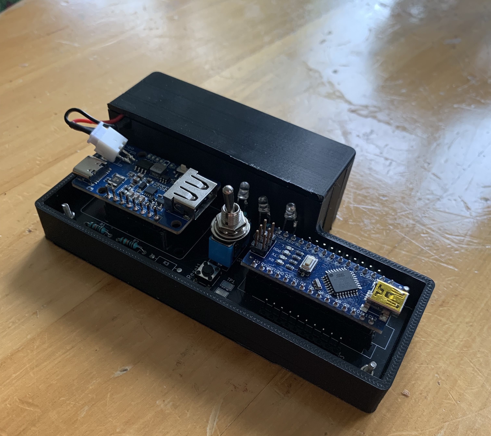
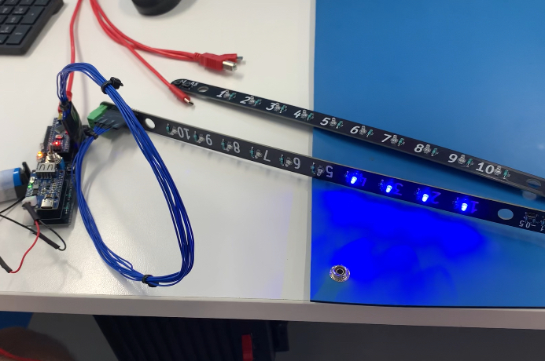
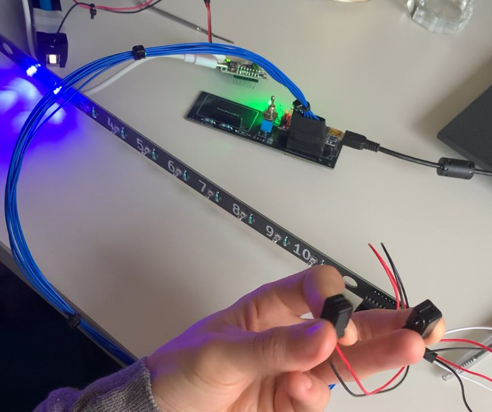
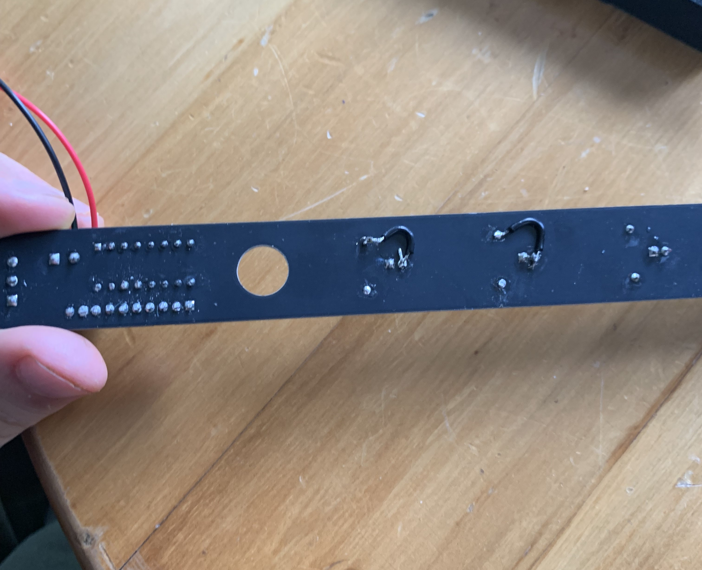
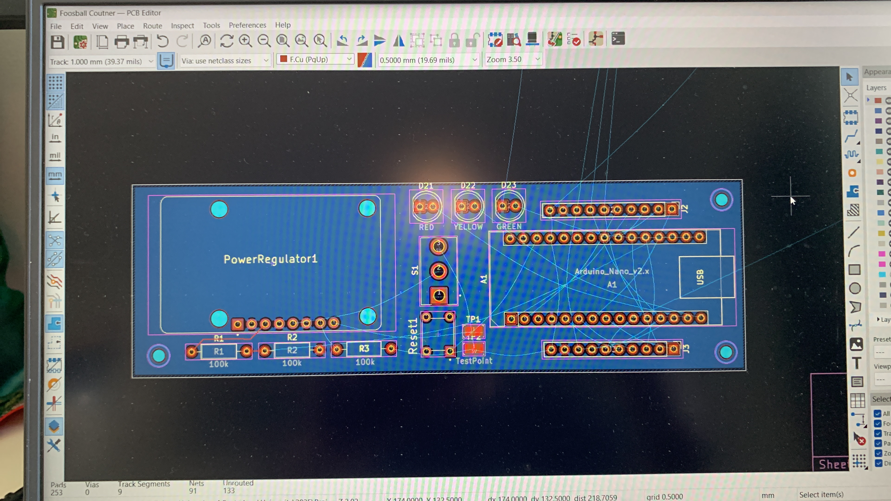

Automatic Foosball Counter
Personal Project
Overview
At my old flat, we had a foosball table (table soccer) and, as you would expect from six guys, it became very competetive. I was looking for a project to get more hands on experience with PCB design, and I decided to make a system to automatically count the score and display it with LEDs.
The system is made up of a power converter, lithium ion battery and arduino nano on one custom made PCB board. This has three battery level indicators, ON switch and a reset button. Wires then connect from this board to two boards with 10 red and blue LEDs corresponding to the two teams. Breakbeam IR sensors were used to count the score, with +1 and -1/2 buttons on each score keeping board.
Unfortunately, just before I got the system fully working, I moved to a different flat which doesn't have a foosball table! I'm currently on the lookout for another one which I can fit it to.





Tools and skills
- KiCAD to design the PCB and Schematic.
- Multimeter and power supplies to debug the circuit.
- Soldering iron to connect components.
- Arduino IDE to program the system.
Limitations and Improvements
- Have not yet been able to fit the system to a table and do in-place testing
- Small error in PCB design, didn't connect LEDs 9 and 10 (image 3)
- I wasn't able to easily find the right connector for the battery converter. I desoldered it and replaced it with a standard 2 pin JST which proved to be unreliable.